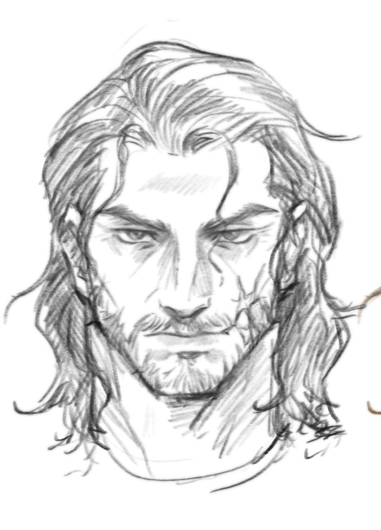

Thomas d Givras is one of the main characters in Between Two Fires by Christopher Buehlman.
He is a disgraced knigth who's also been excommunicated by the Church turned brigand during the time of the Black Plague.